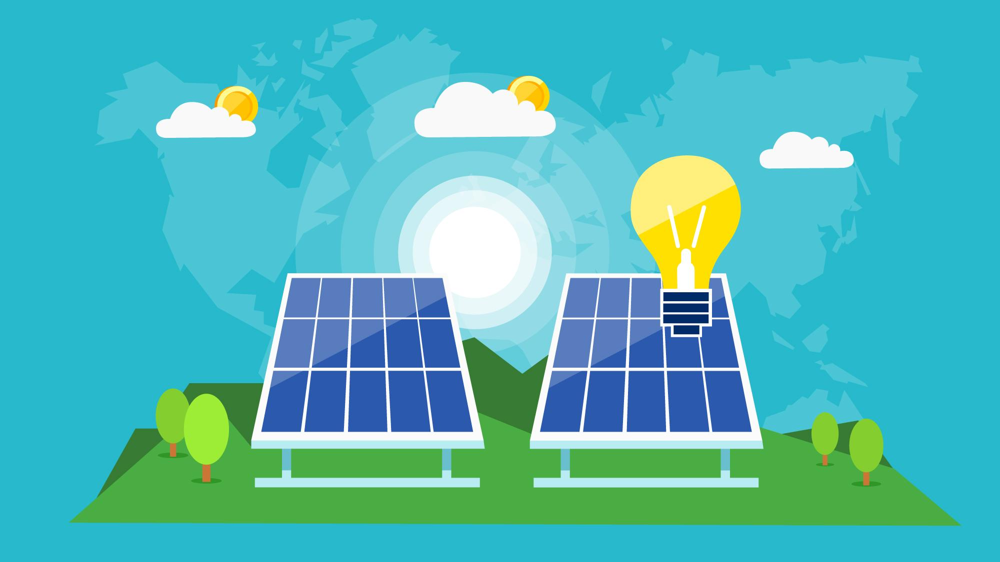

Сонячна енергетика
Про сонячну енергетику
Сонячні електростанції (СЕС) - це установки, які використовують сонячну енергію для виробництва електричної енергії. Вони використовують сонячні панелі, що перетворюють сонячне випромінювання на електричний струм у процесі фотоелектричного ефекту.
Сонячні електростанції можуть бути різних розмірів і типів. Одиницями, що складаються з сонячних панелей, є фотовольтаїчні модулі, а колекції модулів утворюють фотовольтаїчні поля. Маленькі СЕС можуть бути встановлені на покрівлі будівель або інших невеликих площах, а великі сонячні електростанції розташовуються на великих земельних ділянках або навіть у просторі, наприклад, на плавучих платформах на водоймах.
Основні переваги сонячної енергетики
Сонячні електростанції можуть бути різних розмірів і типів. Одиницями, що складаються з сонячних панелей, є фотовольтаїчні модулі, а колекції модулів утворюють фотовольтаїчні поля. Маленькі СЕС можуть бути встановлені на покрівлі будівель або інших невеликих площах, а великі сонячні електростанції розташовуються на великих земельних ділянках або навіть у просторі, наприклад, на плавучих платформах на водоймах.
Відновлюване джерело енергії
Сонячна енергія є безкоштовним та безмежним джерелом енергії. Сонячні електростанції використовують сонячні панелі для збору сонячного випромінювання та перетворення його на електричну енергію.
Нульові викиди парникових газів
У процесі виробництва електроенергії з сонячних електростанцій не викидаються шкідливі гази, що призводять до парникового ефекту та зміни клімату. Використання сонячної енергії сприяє зменшенню залежності від викопних палив та скороченню викидів CO2, спричинених енергетичними процесами.
Спадні витрати та енергозбереження
Після встановлення сонячних електростанцій витрати на виробництво електричної енергії є мінімальними. Сонячні панелі не вимагають палива для роботи та не потребують частого обслуговування. Крім того, використання сонячної енергії сприяє енергозбереженню та зменшенню витрат на електроенергію.
Децентралізована генерація
Сонячні електростанції можуть бути встановлені на покрівлях будинків, великих комерційних спорудах або на відкритих майданчиках. Це дозволяє генерувати електричну енергію на місці споживання, зменшуючи втрати енергії при транспортуванні та розподілі.
Заощадження на рахунках за електроенергію
Встановлення сонячних панелей дозволяє господарствам та підприємствам знизити витрати на електроенергію. Виробництво власної сонячної електроенергії допомагає зменшити залежність від тарифів на електроенергію та підвищує економічну ефективність.
Резервне живлення
Сонячні електростанції можуть працювати автономно та забезпечувати електричне живлення в разі відмови основної мережі. Це особливо корисно у віддалених районах або під час надзвичайних ситуацій.
Створення робочих місць та розвиток галузі
Розширення використання сонячних електростанцій сприяє розвитку відповідної промисловості та створенню робочих місць у сфері проектування, виробництва, монтажу та обслуговування сонячних систем.
Проте, сонячна енергетика також має свої виклики та потенційні проблеми
Однак, є деякі виклики і обмеження, пов'язані з сонячними електростанціями, включаючи високі початкові витрати на встановлення, залежність від погодних умов і потребу у великій площі для встановлення великих СЕС.
Залежність від погодних умов
Рівень виробництва електроенергії сонячними електростанціями залежить від наявності сонячного випромінювання. У похмурих або дощових днях виробництво електроенергії може бути обмеженим, що може вплинути на стабільність постачання.
Високі початкові витрати
Встановлення сонячних електростанцій вимагає значних початкових інвестицій. Вартість сонячних панелей та системи зв'язку може бути високою, хоча ці витрати з часом зменшуються.
Великі площі для встановлення
Великі сонячні електростанції вимагають значних земельних площ для встановлення. Це може створювати виклики у віддалених або густонаселених районах, де недостатньо вільних територій.
Виробництво та утилізація сонячних панелей
Виробництво сонячних панелей пов'язане з використанням рідкого кремнію та інших матеріалів, що можуть мати негативний вплив на довкілля. Крім того, утилізація старих або пошкоджених сонячних панелей також може бути проблемою з точки зору впливу на довкілля.
Потенційні обмеження мережі
Інтеграція великих сонячних електростанцій у електричну мережу може створювати технічні виклики, зокрема щодо розподілу та стабільності електроенергії. Для ефективного використання сонячної енергії потрібна адекватна інфраструктура та технології управління електромережею.
Потреба у батарейних системах
Для збереження та використання електроенергії, виробленої сонячними електростанціями, можуть бути потрібні батарейні системи. Це може збільшити вартість та складність системи.
У світі постійно зростає кількість сонячних електростанцій, оскільки сонячна енергія стає все більш привабливою та конкурентоспроможною альтернативою традиційним джерелам енергії, таким як вугілля, нафта та природний газ. Широке використання сонячних електростанцій сприяє розвитку стійкого енергетичного сектора та зменшенню викидів парникових газів, спричинених генерацією електроенергії зі викидами вуглецю.
Здешевшання технології виробництва сонячної електрики стало поштовхом до будівництва великих електростанцій. Всі вони, в силу злиття позитивних географічних та економічних факторів, знаходяться в США. Пропонуємо вашій увазі список найбільш великих СЕС.
Найпотужніші СЕС світу
Solar Star, Розамонд, Каліфорнія - 579 МВт
Topaz Solar Farm, Сан-Луіс, Каліфорнія - 550 МВт
Desert Sunlight Solar Farm, Мохаве, Ріверсайд, Каліфорнія - 550 МВт
Сонячна теплоелектростанція Айванпа, Сан-Бернардіно, Каліфорнія - 392 МВт
Solar Energy Generating Systems, пустеля Мохаве, Каліфорнія - 354 МВт
Agua Caliente Solar Project, Ауга-Калієнте, Арізона - 280 МВт
Сонячна електроенергія є перспективним і важливим джерелом енергії, яке має багато переваг для нашого суспільства та довкілля. Вона є безкоштовною, відновлюваною та екологічно чистою формою енергії, яка допомагає зменшити вплив на зміну клімату та забруднення довкілля. Сонячні системи дозволяють нам стати енергетично незалежними, знизити витрати на електрику та інвестувати в майбутнє. Застосування сонячної електроенергії широке і рознообразне, вона може бути використана як для житлових, так і для комерційних та промислових потреб. Завдяки постійному технологічному розвитку та зниженню вартості сонячних систем, вона стає все більш доступною та ефективною. Сонячна електроенергія має потенціал стати ключовим джерелом енергії майбутнього, допомагаючи нам побудувати стійке та стале енергетичне майбутнє.